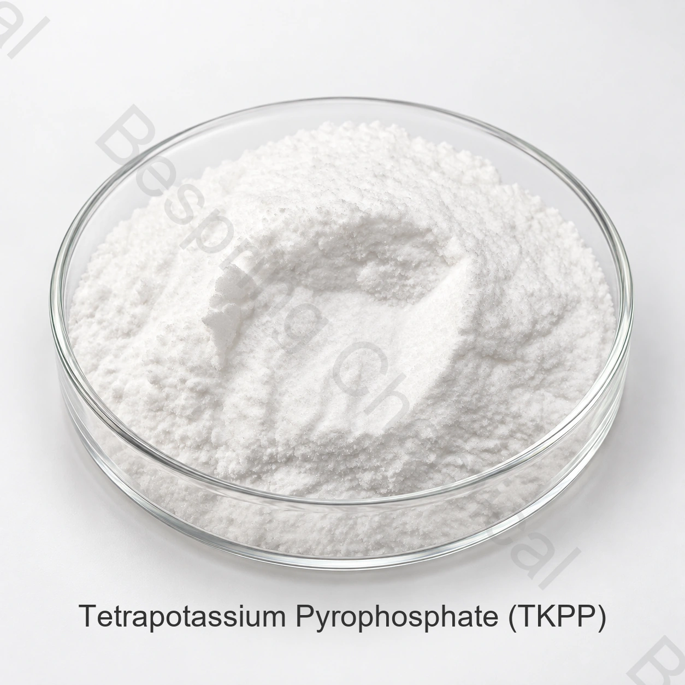

Identité et grade du produit
Indiquer l'identité exacte, le grade, l'analyse garantie des éléments nutritifs, la forme, l'application, la quantité, l'emballage et la destination.
Classe d'engrais · Sel d'engrais phosphatés · PPTK
Le pyrophosphate de tétrapotassium est un phosphate condensé hautement alcalin et soluble dans l'eau qui peut être évalué pour des utilisations spécialisées d'engrais ou de substances nutritives seulement après une validation agronomique, compatible et réglementaire.

Image du produit · confirmer la qualité et l'emballage lors de la commande
Partager l'analyse garantie, la forme, l'utilisation des engrais, la quantité, la destination et les documents.
GradeApplication d'engrais
SpécificationDisponible en privé auprès des ventes
CompétenceAnalyse et essais nécessaires
ConformitéÉtiquette et marché spécifique
Réponse directe du produit
Le pyrophosphate de tétrapotassium est un phosphate condensé hautement alcalin et soluble dans l'eau qui peut être évalué pour des utilisations spécialisées d'engrais ou de substances nutritives seulement après une validation agronomique, compatible et réglementaire.
Aussi appelé pyrophosphate de tétrapotassium; pas une désignation universelle d'engrais L'identité chimique à elle seule n'établit pas la qualité d'engrais, la garantie de nutriments, la solubilité, l'aptitude des cultures ou l'enregistrement du marché.
Liste de contrôle pour les achats
Comparer la qualité offerte, les exigences de demande et les conditions commerciales avant de demander un échantillon ou de passer une commande.
Indiquer l'identité exacte, le grade, l'analyse garantie des éléments nutritifs, la forme, l'application, la quantité, l'emballage et la destination.
Comparer les spécifications spécifiques à la source, la déclaration des éléments nutritifs, l'ACO actuel, l'emballage, Incoterm et la fenêtre de livraison.
Le cas échéant, confirmer la solubilité, l'insoluble, la compatibilité source-eau, la concentration des stocks et le programme de culture.
Demander la SDD, les spécifications privées ou la SDT, l'ACO représentative, l'ACO par lots, la traçabilité et les fichiers du marché de destination.
Examen de la demande
Il s'agit de domaines de qualification, et non de recommandations universelles, de taux d'éléments nutritifs, d'approbations d'étiquettes ou de résultats agronomiques garantis.
Évaluer le PPTK uniquement par rapport à une exigence définie en matière de formulation des éléments nutritifs.
Indiquez pourquoi un phosphate condensé est envisagé. Évaluer le comportement et la performance de la solution dans le système d'engrais prévu.
Utiliser de l'eau, de la concentration, de la température et du temps de rétention représentatifs.
Obtenir un examen local du programme de culture, de la déclaration du produit et de l'utilisation autorisée.
Sélection technique
Précisez le pyrophosphate de tétrapotassium et sa base d'essai. Conserver le TKPP distinct du phosphate monopotassique et du tripolyphosphate de potassium.
Demander la déclaration de phosphore et de potassium, la méthode solution-pH et la composition réelle offerte. Une formule chimique théorique n'est pas une garantie de lot.
Examiner l'hygroscopie, l'emballage et la protection de stockage. Tester le concentré proposé avec l'eau et les autres composants d'engrais.
Exiger une justification agronomique et une documentation pertinente sur l'utilisation des engrais pour la destination prévue. Ne pas présumer qu'une application alimentaire ou industrielle établit la pertinence des cultures.
Documentation technique privée
Bespring Chemical ne publie pas en ligne les spécifications du produit pour cette matière première d'engrais. Contactez les ventes pour les spécifications actuelles spécifiques à la source ou TDS et confirmez sa révision, ses méthodes d'analyse et ses critères d'acceptation.
Demander la spécification actuelle signée ou la SDT, la SDD, les méthodes d'essai, l'ACO représentative et l'ACO de lot.
Confirmer l'analyse garantie, la base d'expression, l'étiquetage, l'enregistrement des engrais, les oligo-éléments et les exigences de destination.
Révision Directives de la FAO en matière de nutrition végétale, Directives de la FAO sur les spécifications en matière d ' engrais et NIH PubChem dossiers chimiques. L'aptitude agronomique et l'enregistrement des engrais demeurent spécifiques aux cultures, aux sols, aux formulations et aux compétences.
Note agronomique: Cette page fournisseur ne prescrit pas de doses nutritives et ne démontre pas l’adéquation à une culture. Fondez le choix et l’application d’engrais sur les analyses de sol, d’eau et de tissus végétaux, les conseils agronomiques qualifiés, les essais de compatibilité, l’étiquette approuvée et les exigences environnementales locales.
Stockage et manutention
Questions des acheteurs d'engrais
Le pyrophosphate de tétrapotassium est un phosphate condensé hautement alcalin et soluble dans l'eau qui ne peut être évalué pour des utilisations spécialisées d'engrais ou de substances nutritives qu'après validation agronomique, compatible et réglementaire.
Aussi appelé pyrophosphate de tétrapotassium; pas une désignation universelle d'engrais. Demander l'analyse garantie spécifique à la source actuelle et confirmer si les éléments nutritifs sont exprimés en N, P2O5 et K2O ou sur une autre base légale.
Bespring Chemical ne publie pas en ligne les spécifications des produits fertilisants. Contacter les ventes pour les spécifications actuelles spécifiques à la source ou TDS, les méthodes d'analyse et l'ACO représentative.
Aucun grade n'est établi par le seul nom chimique. Les engrais, les aliments et les produits techniques ont différentes utilisations prévues, la documentation, les contrôles des impuretés et les exigences réglementaires.
Fournir l'identité exacte et le formulaire requis, l'analyse garantie, l'application d'engrais, la quantité, l'emballage, la destination, les documents d'enregistrement, Incoterm et la date de livraison.
Contenu mis à jour 2026-09-13.
Approvisionnement connexe
Parcourez le portefeuille de phosphate et de sel de potassium de qualité fertilisante.
Discutez d'une spécification privée, de documents, d'un échantillon et d'exigences commerciales.
Examiner l'approvisionnement et l'appui à l'exportation pour les achats internationaux de produits chimiques.
Approvisionnement en engrais dirigé par des spécifications
Partager l'analyse garantie, le grade et la forme, l'application d'engrais, les limites critiques, la quantité, l'emballage, la destination et la liste de documents.
Dites-nous votre marché de qualité et de destination afin que nous puissions confirmer quels documents sont disponibles pour votre commande.
Une référence externe n'est pas un certificat de lot ou une spécification de produit Bespring.